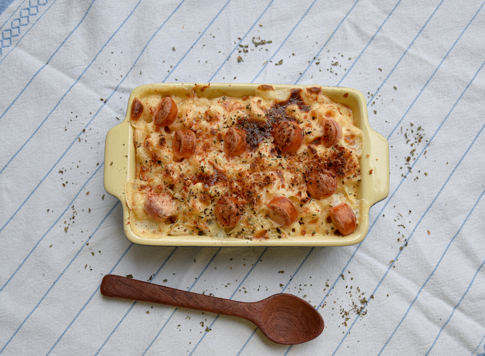

<!DOCTYPE html>
<html lang="en">
    <head>
        <meta charset="UTF-8">
        <title>The Best Lasagna Recipe</title>
    </head>
</html>

<body>
    <h1>Delicious Lasagna</h1>
    
    <h4>The Best Lasagna Recipe Ever</h4>

    <p>This Homemade Lasagna is an easy, classic family favorite recipe!</p>
    <p>Delicious meaty sauce layered with cheese filling and tender pasta make this the best lasagna recipe!</p>
    <p>When you want a lasagna recipe that is not only delicious but easy enough to make on a weeknight, this classic, easy recipe makes the best lasagna!</p>
    <p>It’s a family favorite meal, along with other easy ground beef recipes – such as my Chili, Spaghetti Sauce, Baked Ziti, and Stuffed Peppers.</p>

    <h2>Ingredients</h2>
    <ul>
        <li>1 pound lasagna noodles, cooked according to package directions</li>

        <h4>Meat Sauce</h4>
        <li>1/2 pound ground beef</li>
        <li>1/2 pound Italian sausage</li>
        <li>2 teaspoons dried basil</li>
        <li>2 teaspoons dried oregano</li>
        <li>36 ounces pasta sauce, store-bought or homemade</li>
        <li>2 tablespoons tomato paste</li>

        <h4>Cheese Filling</h4>
        <li>1 large egg, lightly beaten</li>
        <li>1 (8-ounce) package cream cheese, softened</li>
        <li>1 cup plain Greek yogurt</li>
        <li>1/2 cup Parmesan cheese, shredded and divided</li>
        <li>4 cups mozzarella cheese, shredded and divided</li>
        <li>1 bunch fresh parsley, chopped <em>(optional)</em></li>

    </ul>

    <h2>Instructions</h2>
    <ol>
        <p><li><strong>Prep.</strong> Preheat oven to 350º F. Spray a 9×13 baking dish with nonstick cooking spray and set aside. Cook and drain the lasagna noodles. Set aside.</li></p>
        
        <p><li><strong>Make the Meat Sauce.</strong> Cook ground beef and Italian sausage in a large skillet over medium heat. Drain the meat well.</p>
             <p>Stir in the Stone House Seasoning, basil, oregano, pasta sauce and tomato paste. Simmer until sauce has thickened, about 5 to 10 minutes.</p>
        <p><li><strong>Make the Cheese Mixture.</strong> Lightly beat the egg in a large mixing bowl.</p>
            <p>Add the cream cheese, Greek yogurt, 2 cups Mozzarella cheese, 1/4 cup Parmesan cheese, and parsley (optional). Stir to combine well.</p>
        <p><li><strong>Layer the Lasagna.</strong> Ladle 1 cup Meat Sauce into the prepared 9×13 baking dish. Top with a layer of the lasagna noodles. </p>
            <p>Spread 1/3 of the Cheese Mixture over the noodles and top with 1 cup of Meat Sauce.
            Repeat twice.
            <p>Top with another layer of lasagna noodles and the remaining Meat Sauce.</p>
            <p><li><strong>Bake the Lasagna.</strong> Cover lightly with aluminum foil and bake for 40 minutes.</li></p>
            <p><li><strong>Top with Cheese and Serve.</strong> Remove foil and top with remaining 2 cups Mozzarella cheese, 1/4 cup Parmesan cheese.</p> 
                <p>Bake uncovered until browned, about 15 minutes. Rest for 10 minutes before cutting and serving.</p>
    </ol>

</body>

<a href="../index.html">Go back to home page</a>